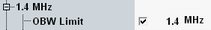
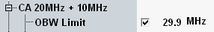

Occupied Bandwidth Limits
The occupied bandwidth is the bandwidth that contains 99 % of the total integrated power of the transmitted spectrum. According to 3GPP, the occupied bandwidth must be less than the theoretical (aggregated) channel bandwidth. The limit for the occupied bandwidth can be set in the configuration dialog.
Without carrier aggregation, the limit can be set per channel bandwidth.

OBW limit setting for 1.4 MHz BW
With carrier aggregation, it can be set per channel bandwidth combination.

OBW limit setting for 20 MHz + 10 MHz